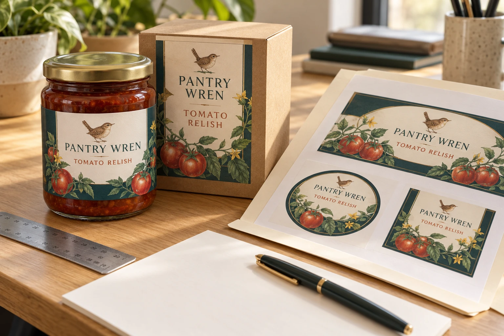

A small food brand can have a correct ingredient document, an attractive design and a confirmed packing date, yet still be unready to order labels. The files may describe different versions of the product.
The founder approves the front panel. The co-packer updates a quantity. The designer adjusts the back label. Purchasing receives a PDF named final, without knowing which decisions it includes.
Make the print release identify the product, artwork and physical label specification together. An approval that cannot be traced to those items is difficult to use when the rolls arrive. This guide addresses that handoff, rather than deciding the legal content of your food label.

AI-generated packaging example. Pantry Wren is a fictional original brand. The folder and papers illustrate an approval workflow, not an actual order, signed approval or regulatory assessment.
Decide who is approving which question
Start with three connected approvals. The responsible food business or its appointed reviewer confirms the product information for the destination market. The artwork reviewer confirms the agreed file and its placement. Production confirms that the physical label proposal fits the container, application process and use conditions.
One person may hold more than one responsibility. That does not make the questions interchangeable. A spelling check does not establish material suitability. A printer identifying a file problem does not mean it has verified the recipe or determined the applicable labeling rules.
Record the actual responsible names or roles in your internal release file. This is a purchasing workflow, not a rule about how every business must organize itself. Where responsibilities are contracted differently, describe the real arrangement rather than assuming that the printer owns every check.
Give each product version a stable identity
Use a product or SKU reference that your business and packer understand. Attach the variant, pack size, target market and artwork revision. Keep the quantity per version in the same record.
An illustrative tomato-relish range might use similar front labels across two pack sizes. That does not prove the back panel, code, label dimensions or quantity are interchangeable. If one pack changes, identify the affected files explicitly instead of replacing a shared attachment without explanation.
Avoid relying on folder names such as latest or final-final. A dated revision, a short change description and a clearly identified replacement file make the release easier to review. Keep superseded files as history, but remove them from the active production handoff.
Copy this print-release register
The register below connects decisions that are often spread across messages. Fill it with the actual references; an empty cell remains an open item.
| Release item | What the buyer should record | What closes the item |
|---|---|---|
| Product identity | SKU, variant, pack size and intended market | Responsible business confirms the record matches the product |
| Supplied information | Reference to the approved copy document | Appointed content reviewer identifies the approved revision |
| Print artwork | Exact filename or controlled file ID, version and date | Reviewer confirms the supplied artwork is the intended file |
| Label geometry | Dieline reference, width, height and placement | Fit review on the actual container or clearly identified sample |
| Construction | Proposed face, adhesive, liner and finish | Relevant material review and any agreed trial are recorded |
| Production format | Hand or machine application and required roll/sheet details | Packer confirms the requirements that affect its process |
| Quantities | Units per artwork and packing allocation | Buyer and packer reconcile the actual order schedule |
| Remaining conditions | Open questions, owner and next action | Each responsible person records the outcome before release |
Use a separate row or attachment when a variant needs a different construction or format. The purpose is to make the exceptions visible, not to force a complicated range into one misleading specification.
Distinguish the PDF check from the package check
A digital proof is useful for checking the supplied artwork and layout against the agreed file. It is not the same object as a finished label on a filled jar. Sttark's proof explanation distinguishes electronic proofs from printed proofs used to review an actual material and finish combination. That illustrates why the approval question needs to be named; it does not establish another printer's process or this website's service terms.
For a jar, review the usable panel rather than the widest visible diameter. For a pouch, consider the filled shape and relevant folds. A paper mockup can help identify a size or placement issue, but does not establish adhesive, print or moisture performance.
Keep those limits in the release record. If only the artwork is approved, say so. If an actual construction trial is required, list its conditions, evidence and responsible reviewer. Do not let a thumbs-up message for a PDF become an undocumented full production approval.
Plan the information area before making it smaller
The physical specification needs space for the approved information and coding process. Ask the responsible content reviewer which blocks must be included and what presentation constraints apply to the intended market. The food-label layout planning guide helps organize that conversation.
If the supplied content does not fit the intended panel, return the conflict to the appropriate reviewer. A back label, a different dieline or another packaging arrangement may need consideration. Do not resolve the conflict by silently reducing text, deleting a block or assuming an exemption applies.
Likewise, reserve any later date or lot-printing zone with the packer. Identify the actual coding process and the proposed printed surface or finish. An empty rectangle on the design is not evidence that the later code will print acceptably.
Let the application process influence the order
A label that looks good on a desk may still arrive in an unsuitable roll format. Obtain the packer's relevant machine or handling requirements before the release. Core, maximum roll size, unwind, gap and quantity distribution may be important, depending on the actual equipment.
If those requirements are unknown, ask the packer for the applicable specification rather than choosing from a diagram by intuition. For the equipment handoff, see labels for co-packers.
Storage and application also need separate descriptions. A chilled product does not tell the printer whether the container is dry, cold or wet when the label first contacts it. Record the condition that affects the proposed construction; ask for advice without turning an undecided material into an approved one.
Release a trial with a defined purpose
A smaller trial can be useful when fit, handling or the artwork is unsettled. Specify what the trial is meant to answer and what it will not establish. A presentation sample, a line trial and a commercial production order are different purchases.
Confirm the available quantity, construction and format with the supplier rather than assuming that a familiar minimum applies to every job. Compare trial and later-order conditions separately. The food-label product page supplies the product context for that discussion.
Change the record when the job changes
When the recipe, pack, artwork or application process changes, identify the affected approval and issue a new release revision. Preserve the earlier reference so that retained samples and stock can be understood. Do not assume that approving a new front panel also approves all the old back-panel information.
Before the printer starts, the release should show a coherent set of files and any agreed exceptions. The most useful outcome is a decision everyone can identify, not another attachment named final.
Send the packet and identify the open items
Start a food-label specification inquiry through the contact page with the container photos, intended label dimensions, SKU quantities, application and storage conditions, and the artwork revision available for review. State whether you need an initial discussion, a trial or a production quotation, and identify unresolved fields.
Use the listed email or WhatsApp route for attachments; the form opens an email draft. Keep responsibility for product information and applicable requirements with the appointed reviewer. The next useful step is to clarify the actual printing job and remaining decisions before committing it to production.